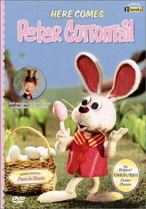

17th
March
2008
I guess it was today? Or yesterday? Or was it Saturday? I’m kinda confused. Here’s some St Patricky goodness of many flavors for y’all to enjoy.
Darby O’Gill meets King Brian — it really warms up when Darby plays the Fox Chase at 4:50
Also check out Darby O’Gill’s Wishing Song
Leprechauns Christmas Gold … Not really for St. Patrick’s Day but every holiday needs dome Rankin/bass.
Also, who wouldn’t love the Swedish Chef, Animal, and Beaker singing Danny Boy? [Tip o' the cap goes to Humu!]
Now I’m off for my traditional Irish meal of Irish O’Garlic sausages and a Shamrock Shake …
posted in Disney, Music, Rankin/Bass |
8th
April
2007
The Rankin/Bass Historian has posted some excellent art from Here Comes Peter Cottontail. First we have the character sheet by Paul Coker Jr, who did a lot of art and design work for Rankin/Bass specials. Also on the blog is a high-resolution black and white still of Sassafrass and his cart, it’s got some incredible detail to it. Make sure you check out the link to see the whole thing. Happy Easter everyone!
posted in Animation, Rankin/Bass |
29th
March
2007
Easter’s just around the corner, and another holiday brings more Rankin/Bass. Yay! Rankin/Bass made two Easter-themed specials: 1971′s “Here Comes Peter Cottontail” and 1977′s “The Easter Bunny Is Comin’ to Town”.

Here Comes Peter Cottontail
I haven’t seen “Here Comes Peter Cottontail” since I was a kid. I don’t remember it very well, but it’s probably the better of the two, and I’m really eager to see it again. It’s available on DVD, and I’m going to try to get it before Easter.
Watch out: there’s an utterly despicable 2005 sequel called “Here Comes Peter Cottontail: The Movie.” About 20 minutes into trying to watch it, I developed Tourette’s. If you’ve seen the 2001 sequel to Rudolph the Red-Nosed Reindeer, “Rudolph and the Island of Misfit Toys,” then you have an idea of how bad the Peter Cottontail sequel is. If you haven’t heard of either of them, just do whatever you can to steer clear of them.

The Easter Bunny Is Comin’ to Town
“The Easter Bunny Is Comin’ to Town” is a whole ‘nother egg hunt… and it’s actually just a re-tread of “Santa Claus Is Comin’ to Town.” Just as the Santa Claus in that special bears little resemblance to the Santa seen in the Rudolph special, this tale has nothing in common with the Peter Cottontail special — the protaganist here is Sunny the Bunny.
In both “Comin’ to Town”s: the narrator is a postman played by Fred Astaire; the holiday icon (Sunny in “Easter Bunny”, Kris Kringle in “Santa Claus”) lives in one town, and wants to deliver their holiday gifts to children in another town; delivery of the gifts is thwarted by the authority figure in the town, and sneaky ways to get the gifts delivered in the dark of night are developed; and along the way, today’s well-known traditions are spawned. Oh — and both figures also have trouble getting over a mountain between the two towns, because of a big scary monster type of obstruction that by the end of the special has learned to be good. It’s like they just took one script and filled it in Mad Libs-style to get two specials out of it.
Despite the strange deja vu feeling of watching “Easter Bunny,” it’s not half bad. The thing that bugs me is that the jelly beans look more like jelly noodles. It’s kind of weird.
posted in Animation, Rankin/Bass |
17th
March
2007
 The Leprechauns’ Christmas Gold [Amazon.com]
The Leprechauns’ Christmas Gold [Amazon.com]
The Leprechauns’ Christmas Gold is — and I say this as a massive Rankin/Bass fan — a disappointment. First off, why on earth didn’t Rankin/Bass make this as a St. Patrick’s Day special? Heck, even Groundhog Day got a Rankin/Bass special, but instead they chose to further glut their already overloaded Christmas special catalog with this. Leprechauns belong to St. Patrick’s Day, period. Rankin/Bass had a bad history of cross-polluting their holidays (see: Rudolph & Frosty’s Christmas in July, Rudolph’s Shiny New Year). But this is just a straight out omission. Okay, okay, it’s got the song “Christmas in Kilarney,” which nearly sells me on the concept… but really it’s a stretch.
Despite that, with all its over-the-top stereotypical Irish-like goodness, it’s Rankin/Bass’ sort-of St. Patrick’s Day special. If you squint. And turn the volume down. [and drink! -Hanford] It stars Art Carney as the leprechaun Blarney Kilakilarney, whose clan lives on a remote, fog-cloaked island uninhabited by humans. They share the island with a competing leprechaun clan, including his ex-wife. Along comes a boy looking for a Christmas tree, he takes the one on the island, which was really a trap for the banshee, who’s now on the loose, and wants the leprechauns’ gold, blah blah blah, she’s after me pot o’ gold!, blah blah blah, the end. Unless you’re a Rankin/Bass diehard, go watch Darby O’Gill and the Little People instead.
But, all this talk of “you’re just after me pot o’ gold!” gives me an excuse to post a link to this. Which only makes sense if you have your speakers on. And even then, not really. It just makes me giggle.
Happy St. Patrick’s Day!
posted in Animation, Rankin/Bass, Television |
12th
March
2007
The image on the left is from a rare stop-motion puppet of Jerry Lewis that was built by the Rankin/Bass animation studio for some specials. While I’m not a huge Jerry Lewis fan, I can’t get over how cool it would have been if Rankin/Bass (creators of all the great stop-motion Christmas specials) had gone through and produced these cartoons. The puppet has a look to it that you just don’t see in modern animation. Check out the all the photos of the Jerry Lewis Puppet.
According to the Rankin/Bass Historian, it turns out that Arthur Rankin and Jules Bass were huge Jerry Lewis fans and were working on two projects to being Jerry Lewis to stop-motion world. One was “Punch and Judy” and the other was “The Bellboy”. They never went into full production but there was some work done on them. A song was written called “Hey Bellhop!”, which has been locked away in the Rankin/Bass vaults all these years. A demo recording of the song will be included in the soon-to-be-released soundtrack to the The Daydreamer, a special I’ve never seen. Seeing the image of the Jerry Lewis puppet fills my mind with thoughts of what this might have been.
posted in Animation, Midcentury, Rankin/Bass, Television |


{kind=link}